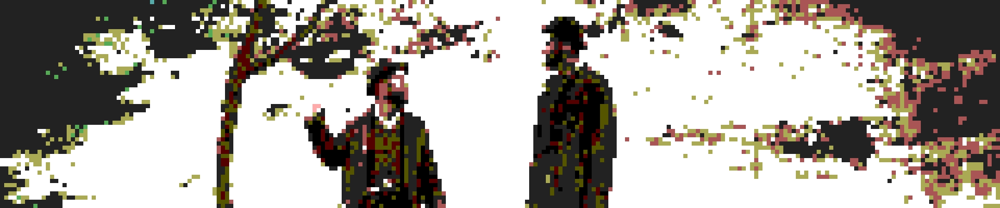

Free-to-use game engines had been a thing for a while when Godot became available, but it being flexible and FOSS came at a perfect moment when the common go-to choice Unity started losing a lot of goodwill for a lot of good reasons.
Unlike other FOSS options like MonoGame, Godot benefits from having a modern, clear GUI and some clever design choices that make transitioning over from Unity easier.
Game development as a space is having a very tumultuous time now; in a space with more mass layoffs than one can keep track of, solo-development and hobbyism amplify.
Welcome! So glad you could make time in your busy schedule.
Thanks, the drive here was horrible, noting how I am not an actual person and cannot drive.
Hah, you jester! Anyways that does bring me to my first question in this unconventional interview. You were released as a 1.0 version in the tail-end of 2014, but your popularity only really picked up over the last few years. What gives?
It's quite common for FOSS software like myself to need a while to actually gain traction. With the years however, we can be able to catch up to our longer-running, well-funded contemporaries.
And in the games industry those would be game engines like Unity and Unreal, right?
Correct, what we share is that the three of us are game engines with rich GUI and the ability to develop both 2D and 3D games. A framework like MonoGame is also able to achieve this of course, but without the benefit of a GUI with a viewport and other useful tools.
Besides these competitors there's also a larger ecosystem of gamemakers and gamemaking tools, what was it like to fall into this space as a relative newcomer?
Well, I should sketch an impression of the year I released as a 3.0 version, which is seen as a big step forward for me! I gained improved documentation, improved 3D rendering and asset workflows, Mono/C#/WebGL support, and tons of other stuff that actually made me competitive with established engines.
Right, so what about the greater games landscape?
In that same year there was the closures of Telltale, Capcom Vancouver, Carbine, Bandai Namco Vancouver, and Wargaming Seattle, Valve implemented a rev-share tier system that favoured big earners over indies, the FTC started their loot box investigations, and of course the following year would see the first wave of mass layoffs all throughout the industry.
Ouch, so how did those circumstances turn out for you?
Painfully beneficial is the only way I can describe it. Thousands of people lost their livelihoods, but as a free and open source game engine I was attractive to a number of them to keep up their skills in game development.
So how did Unity and Unreal fit into that picture then? They were still very popular competitors.
True, and I'm sure a lot of people during this time pre-covid gravitated towards them moreso than me, espcially given how they have become industry standards by this point. However...
However?
Unreal is big, heavy, and aimed at a specific type of game. It's very good at first and third person 3D games, it's unaccomodating to hobbyists who want to experiment in a variety of styles and genres. You -can- make a 2D game in Unreal, but it's a pain.
Unity started receiving a lot of negative press and rep around 2021/2022, with articles coming out about Unity's usage by militaries and the multi-million dollar contract they signed with the U.S. government to help with defense. They also tried to make retroactive Terms of Service changes, which kicked up some dust and actually got them to be more transparent about their TOS changes for a while.
This would eventually lead into their biggest blunder in 2023 however, when there was an attempt to implement a runtime fee of $0.20 per install. Reactions to this were strong, with numerous statements by developers and studios using the software criticizing the decision. This plan was cancelled soon after, but the damage was done and trust in the software was at an all-time low.
Okay I see, so I'm guessing this outrage led to an influx of Godot users?
It did! To the extent where founders worried about this influx of users used to Unity would respond to me as an open-source alternative. Features are proposed and implemented by the community itself, and can't simply be demanded. But so far adoption has been steady and maintainable, with a great amount of patience and understanding on both sides.
So the response of gamedevs to your open-source approach was good?
Very much so, but I also think the prior existence of FOSS tools like Blender and GIMP helped a lot with managing people's expectations. The proposal system for new features also isn't anything new; much like the Old RuneScape polls proposals can gain traction and be implemented if there is enough desire for said feature.
What about criticism of you? Anything you noticed so far, or is it all sunshine and rainbows?
People REALLY want me to have the ability to edit from the inspector during runtime, but so far that simply isn't in the cards and some people hate that enough to stick to Unity; which is fair!
Besides that there's a lot of extreme evangelizing going on, much like those weird console-war guys. It kinda sours the mood around me and makes it hard to actually get sensible information on a game engine and its capabilities. Arguably this is a universal thing when it comes to using software of any kind, but it's reaching a point of frustration.
And lastly, of course, can't forget about the fact that I'm still in the process of proving myself as a game engine that can be used in a professional capacity. Godot-developed games have been released, but far from the extent of engines like Unity or Unreal. This is changing though, thanks to the indie space with games like PVKK, Cruelty Squad, Buckshot Roulette, Arctic Eggs, Dome Keeper, Brotato, the list goes on!
And that list grows by the year it seems. I really enjoyed Webfishing, which was last year I believe. Another Godot game, which it proudly announces as a boot logo.
They don't even have to do that, but them doing it anyways -is- much-appreciated!
Would you say that you're currently moreso catering to hobbyists or professional game developers and studios?
I think I'll be inherently more attractive to hobbyists thanks to the fact I'm FOSS. Companies like it when they can get into direct contact with a company when something isn't working and I simply don't work like that.
But you -are- open source, so if they had a dedicated Godot engineer?
That'd probably be a good way to deal with it, but it's also expensive, and it's not like there are many Godot engineers walking around at the moment. Maybe in the future, but for now Godot is very much a platform made up of indies and hobbyists for sure.
Thank you so much this interview, anything you'd like to add?
Likewise, and yeah! I'd like to encourage any readers to donate to FOSS initiatives of all kinds, be it Blender, GIMP, Krita, or myself. It's how we can keep chugging along and improve, and every small bit is much appreciated.